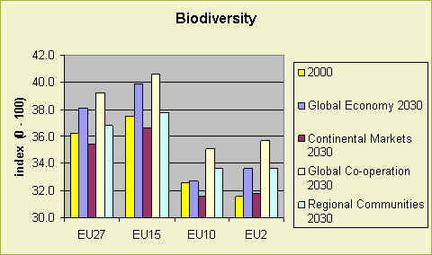

Highlights
The highest biodiversity in Europe is found in Scandinavia and mountainous areas.
Areas with a high amount of agricultural land or urbanization show the lowest
values on the biodiversity index.
In future all scenarios but Continental Market show an EU27-wide increase of biodiversity. The main reason is the decline of the agricultural area in the EU. This former agricultural area slowly transforms into a more natural environment. In some regions however biodiversity develops differently then the overall EU picture and declines.
Especially the policy option on bio-energy production has a negative impact on biodiversity. This policy reduces biodiversity increase with 0,5% percent.
Also CAP payments will impact on biodiversity because with extra CAP payments more area will remain in agricultural production. One the one hand this prevents the transition of farmland into new nature but on the other hand it leads to maintenance of extensive farming systems that contribute to specific high nature value farmlands.
Figure 1 - Biodiversity index for Europe
Past developments
Europe's biodiversity in past, present and future relates to a high extent to
the natural variety in climate, topography, soil conditions and a long time
regionally different pattern of land use. Typical for Europe is the large portion
of agro-cultural landscapes and semi-natural landscapes. Low intensity farming
added to biodiversity in many regions, especially in mosaic landscapes and extensive
pasture systems. Biodiversity is subject to serious decline over the past decades
or even centuries. Major causes of decline have been:
Future developments
In future all scenarios but the Continental Market scenario show an EU27-wide
increase of the biodiversity index in comparison with the year 2000 situation.
The main reason is the decline of the agricultural area in the EU. This area
slowly transforms into a more natural environment.

Figure 2- Biodiversity index for 2000 and the baseline
scenarios in 2030
The Global Cooperation scenario shows the highest biodiversity. This is due
to nature friendly management of forests and in agriculture and the decrease
of agricultural land. Also Global Economy and Regional Communities scenarios
have an increase of the biodiversity index over time. In the Continental Market
scenario the biodiversity will decrease because of the strong pressure on the
land and little attention for environmentally friendly management.
Figure 3 – Chance of the biodiversity index between
2000 and 2030 for the Global Economy scenario
This map shows the development of the biodiversity index between 2000 and 2030
for the Global Economy scenario. The key message of this map is that despite
the overall positive EU development for biodiversity there are many regions
where biodiversity will decline. These regions mainly are found in Scandinavia,
The Netherlands, Czech Republic, Slovenia, parts of the UK and the Baltic states.
Policy effects
The policy on bio-energy will influence biodiversity. Due to this policy more
land is used for agricultural production (to grow energy crops). Without this
policy this land would be abandoned on the long term and become nature. Extra
land for bio-fuels is in general arable land with rather low biodiversity.
More CAP payments also have an impact on the biodiversity through land-use. When extra CAP payments are directed to farmers more land will be remaining in agricultural production. This land would otherwise become abandoned and in most cases become nature (forest, heath land) on the long term. On the short term abandonment of extensive and traditionally farmed areas will have a negative impact on biodiversity.
Most important drivers
The biodiversity index is mainly driven by land-use change (over 50% biodiversity
loss). This has a direct impact on the biodiversity; for example an old forest
has a higher biodiversity then intensive arable land. Other drivers are fragmentation
of habitats by infrastructure, urbanization or agriculture (2% biodiversity
loss), the disturbance by roads (2% biodiversity loss), climate change and pollution
by for instance nitrogen emissions (10% biodiversity loss). The chart shows
the contribution of different drivers for some of the scenarios. The management
of forests and farms (organic, new environmental standards) will also influence
the biodiversity.
Discussion
Developments in EU are different from developments elsewhere in the world. In
the EU the amount of land used for agriculture will decline the next decades
whereas it will increase in many other parts of the world. Therefore biodiversity
will probably decrease elsewhere in the world. This aspect also has to be taken
into account in the Global Economy and the Strong Europe scenarios. These scenarios
assume an 'open' world where parts of EU27s food, feed and fuel will be produced
outside Europe.
In agricultural areas biodiversity is related to the intensity of the farming systems. Especially extensive livestock farming systems can contain a high biodiversity. EU has a special policy targeted on these areas: the High Nature Value farmland policy. Abandonment of agricultural areas in those High Nature Value farmlands will lead to a loss of these special habitats.
Used methodology
This indicator is constructed to show the impact on biodiversity. The value
used to describe the biodiversity is the Mean Species Abundance (MSA) and the
approach used is derived from the GLOBIO3 concept. Biodiversity responds to
land use change and is affected by fragmentation, N deposition, infrastructure
development and land-use intensity. These factors are driven by the (global)
driving forces but also by specific nature policies which are spatially explicit.
The biodiversity index or MSA is derived from land-use, land use intensity (agriculture
and forestry), the N-deposition, fragmentation, infrastructure developments
and policy assumptions on high nature value (HNV) farmland protection and organic
agriculture. In the calculations for Eururalis 2.0 the impact of climate change
on biodiversity is not taken into account. Others studies show an extra negative
impact due to climate change of 1 or 3 percent towards 2030.